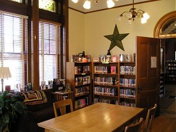
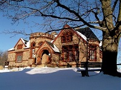

About Us
The Bill Memorial Library has a lot going on for teens in grades 6-12! Our Young Adult Room offers hardcover fiction, non-fiction, paperbacks, and graphic novels just for you. We also offer internet access computers that are reserved specifically for teens during popular library times. Programs, including game nights and book discussions, are held throughout the year.
We also have a lot to offer right on this website! We have online resources available for everything you might need as you study, look for your first job, apply for college, or look for a good book to read.
All of us at the Library want to see you succeed in everything you do, and we want to help in any way we can! We hope this website will be useful to you. If you have more questions, are looking for a good book to read, or just want to come and hang out, stop by the Library or get in touch with us here.
Want to know more about the Bill Memorial Library?
Check out the Library website to learn more about everything it has to offer.